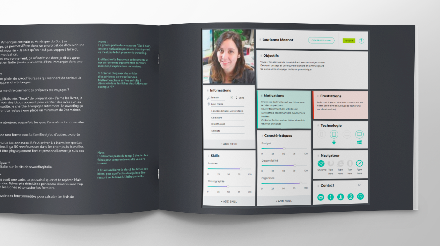
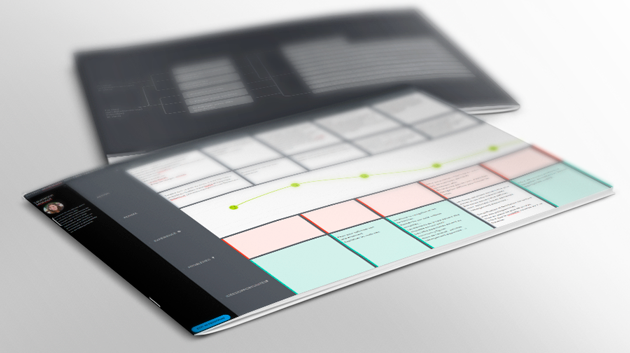
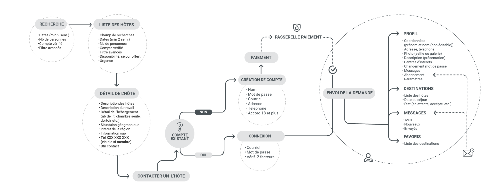
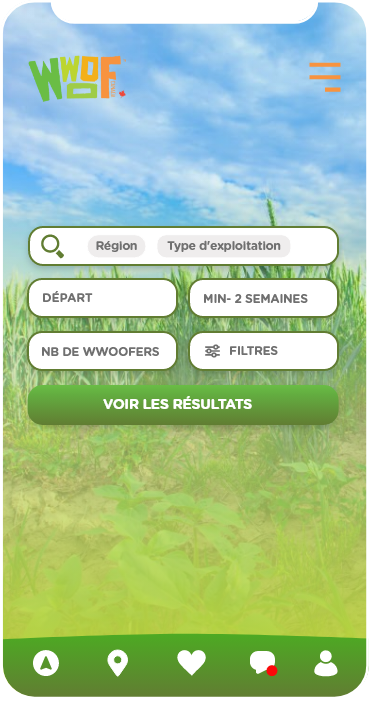
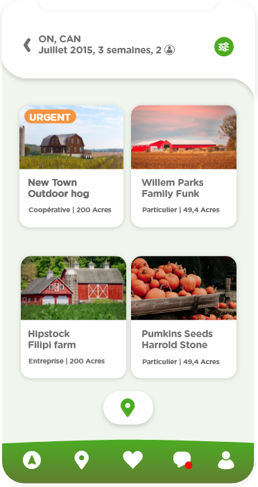
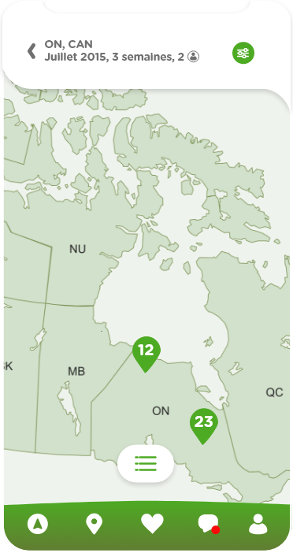
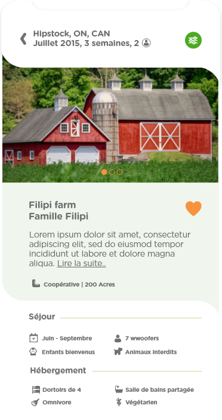

— UX-UI
Application
Wwoof Canada
-
Client: Wwoof Canada
-
Industrie: Écotourisme
Le wwoofing (Willing Workers on Organics Farms ou World Wild Oppotunities on Organics farms) met en relation des fermes bio avec des volontaires. Bien que le concept soit fort, la plateforme actuelle souffrait d'un processus de réservation complexe et d'un manque de fluidité sur mobile.
Objectif : Simplifier le tunnel de conversion et renforcer la confiance entre les membres grâce à une interface intuitive.
Problématiques clés
- - Trop d'étapes pour contacter un hôte.
- - Interface confuse, désuète et non responsive.
- - Difficulté à filtrer les fermes par besoins spécifiques.


Optimiser la mise en relation hôtes & volontaires
— Recherche qualitative
Combinaison d’analyse comparative, d’entretiens utilisateurs et de questionnaires afin de cerner les attentes et les irritants majeurs liés à la planification d’un séjour. Les résultats ont été synthétisés sous forme de personas et d’une carte d’expérience, base stratégique pour la refonte des parcours.
— Visualisation des flows
Cartographie des flows existants pour révéler les frictions, les détours inutiles et les moments où l’utilisateur perd du temps. À partir de cette analyse, création d’un flow optimisé visant à réduire les clics, accélérer l’accès aux actions clés et renforcer l’intuitivité globale de l’application.
— Design des prototypes
Développement de prototypes fonctionnels afin de matérialiser les nouveaux parcours et d’évaluer l’efficacité des solutions UX. Les maquettes ont servi de support aux tests utilisateurs, facilitant l’ajustement des interactions et la validation des décisions de design.
— Test experts
Audit UX complet de l’interface pour détecter les frictions, les incohérences et les obstacles à la compréhension. Cette évaluation experte a permis d’affiner les interactions et de renforcer la cohérence globale avant la validation finale.




